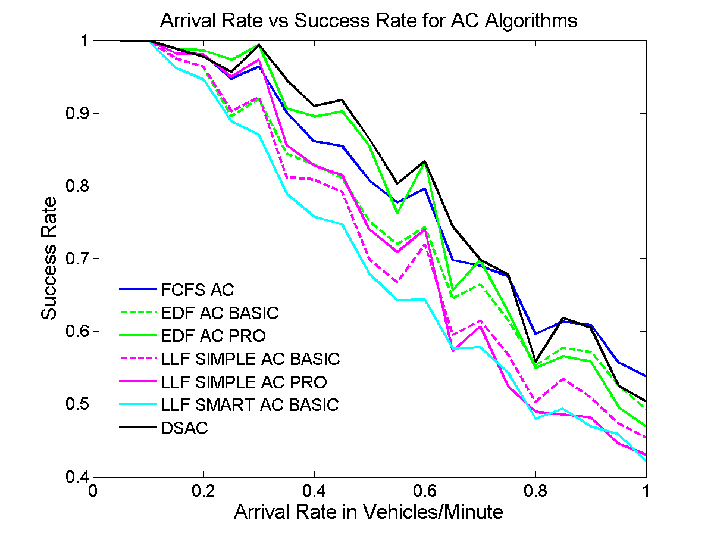

With the growing public awareness of clean energy and efforts towards a sustainable society, the demand for plug-in hybrid electric vehicles (PHEVs) and electric vehicles (EVs) has been increasing steadily over the past decade. These vehicles utilize rechargeable batteries or other energy storage devices, and are much more energy-efficient and environmentally friendly than traditional gasoline or diesel vehicles. As these vehicles become more common, the charging demands of of many PHEVs and EVs could raise problems to the power grid - increased demand for electricity and unwanted peak loads due to simultaneous charging. By having charging stations employ smart scheduling algorithms, increased load can be reduced, and spikes in demand can be more evenly distributed.
After reading some papers written by experts in the field (see sources), we outlined which algorithms we thought were important to test and then began weighing out the different options on implementation. We ultimately decided on building a complete simulation model from scratch in Python. This language allowed us to build quickly, without losing too much performance. It also is very easy use from an object-oriented sense, which was vital for a program of this complexity. We built a CSV output system into our model, and then did all data processing and analysis in Matlab.
FCFS: First Come First Serve - EVs are charged in order of their arrival time
EDF: Earliest Deadline First - EVs are charged in order of their deadline
Laxity = 1 - ( time required to charge / total time at the lot )
LLF:Least Laxity First - EVs are charged in order of lowest laxity
Simple: Laxity only calculated upon EV arrival
Smart: Laxity is updated every minute
DSAC: Decision Scheduling Admission Control - EVs are scheduled in a profit maximization scheme
Admission Control: The algorithm will limit the number of vehicles it accepts
Full Admission: All vehicles are admitted
Profit Maximization: Vehicle are admitted if total profit is predicted to increase
| Algorithm | Static Queue(s) | Dynamic Queue(s) | Single Queue | Multiple Queues | No AC | Basic AC | Full AC | Profit Max. |
| FCFS | X | X | X | |||||
| FCFS AC | X | X | X | |||||
| EDF | X | X | X | |||||
| EDF AC Basic | X | X | X | |||||
| EDF AC Pro | X | X | X | |||||
| LLF Simple | X | X | X | |||||
| LLF Simple AC Basic | X | X | X | |||||
| LLF Simple AC Pro | X | X | X | |||||
| LLF Smart | X | X | X | |||||
| LLF Smart AC Basic | X | X | X | |||||
| DSAC | X | X | X |
make / battery capacity / frequency of occurence in simulation
Chevy Volt / 16 KWh / 58.9%
Nissan Leaf / 24 KWh / 35.3%
Tesla Model S / 60 KWh / 5.9%
DSAC is most profitable for low to medium load, then FCFS AC takes over.
Non-AC algorithms produce more profit unless there is a very high load or a large penalty coefficient. DSAC has slightly less profit but is far more robust.

DSAC is best for low to medium load, then FCFS takes over. Success rate is defined as completed EVS / total EVs in the simulation.
DSAC is best overall. Especially once the load increases. Success rate is defined as completed EVS / total EVs in the simulation.
DSAC excels. This metric defines how many EVs are at least partially charged. Charging all cars a little is better than charge only some to completion which is less practical in reality.
All Non-AC algorithms are far better because they partially charge almost every EV but this causes their low success rate.
Shows how profit is affected with an increasing number of charge ports against an increasing arrival rate on the FCFS AC algorithm. Note how profit always increases with an increase in arrival rate or the number of charge ports.
Shows how profit is affected with an increasing number of charge ports against an increasing arrival rate on the DSAC algorithm. Note how it doesn’t follow the same pattern as FCFS AC.
Shows how profit is affected with an increasing number of charge ports against an increasing arrival rate on the FCFS algorithm. Note how this algorithm doesn’t have nearly the same profit performance as its AC version.
Shows how success rate is affected with an increasing number of charge ports against an increasing arrival rate on the DSAC algorithm. As expected, success rate remains high with a low arrival rate. Also observe how a lot can maintain performance at a higher arrival rates when more charge ports are available.
DSAC is overall the most robust algorithm; it gains very good profit and is able to charge many cars to or close to completion. In small to medium arrival rates, when the success rate is still above 50%, DSAC gains the most profit. However in the very overloaded case First Come First Serve generates the most profit, however it will also decline many vehicles which is not very practical.
DSAC distributes the total charge given over all EVs much better. More cars will be at least partially charged but it will not create as much profit as FCFS during peak hours. This is because many vehicles will not be charged to their full desired charge level. This could be ideal as more EVs will receive at least some charge and will be able to drive to their next destination such as their home charging station. Also, with an exponential charge rate this would allow many cars to be charged to a usable level as opposed to a full cars charged to an unnecessary full charge.
For the charge distance vs arrival rate graph, DSAC is the clear winner among all algorithms with admission control (lower on the graph is better). Charge distance is calculated as the sum of (charge amount desired - charge amount given)2 for every car in the simulation. This means that all cars are getting some charge will be better than a few cars getting completely charged. This is a much more practical metric as it allows more cars to be entered into the lot and given at least some charge so that they can get to their next destination. The only algorithms that outperform DSAC in this metric are FCFS and LLF Smart (both without admission control) . Both of these algorithms have very poor performance in profit and success rate. DSAC arguably offers the best balance between profit, success rate, and charge distance (i.e. practicality).
In an actual parking lot, DSAC would benefit everyone the most. Many customers would be satisfied and the lot would generate very good profit (if not the most in low to medium arrival rates). In terms of making an EV charging lot that is practical, efficient and profitable DSAC is the clear winner.